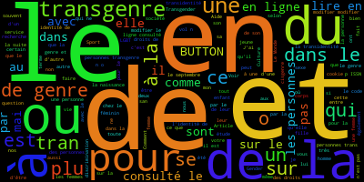
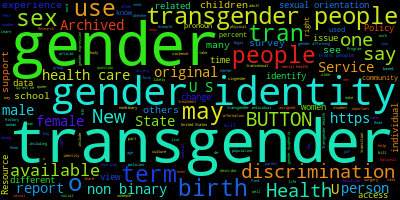
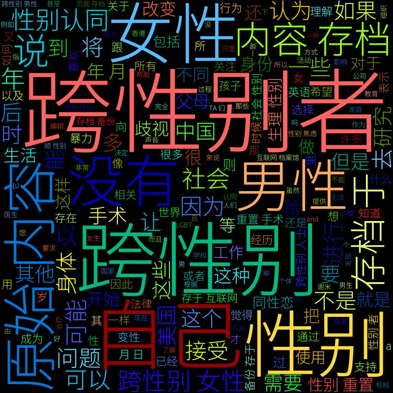
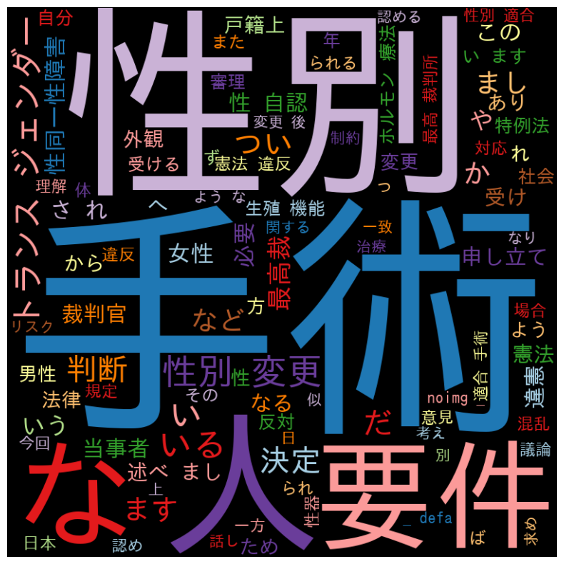

Analyses des Nuages des mots
Dans une société de plus en plus diversifiée et en constante évolution, le concept de "transgenre" gagne progressivement en reconnaissance et en compréhension par le grand public. Pour explorer et analyser plus profondément ce sujet, nous utilisons ici l'outil de visualisation "nuage de mots", avec "transgenre" comme mot central, entouré de termes connexes. Cette méthode nous permet non seulement de visualiser intuitivement les mots-clés associés à "transgenre", mais aussi d'interpréter la signification et la pertinence de ces termes à travers leur taille, couleur et distribution dans le nuage.
Dans ce nuage de mots, "transgenre", en tant que terme central, occupe une position proéminente, entouré de mots étroitement liés tels que "liberté", "inclusion", "diversité", "égalité", etc. Ces termes reflètent non seulement la perception et l'attitude de la société envers la communauté transgenre, mais montrent aussi les valeurs clés poursuivies par cette communauté dans sa lutte pour les droits et la reconnaissance. De plus, l'analyse de la fréquence et de la distribution de ces mots nous offre un aperçu plus profond de l'attention portée par la société aux questions transgenres, ainsi que de leur diversité dans différents contextes culturels et sociaux.
Dans ce nuage de mots vibrant et coloré, le terme "transgenre" domine visuellement, reflétant son importance dans le discours sur la diversité des genres. Les mots "genre", "identité" et "sexualité" y sont également proéminents, indiquant que le débat autour du transgenre touche à des questions fondamentales de l'identité personnelle et de la classification sociale. Les termes "lutte", "droits" et "égalité" soulignent les enjeux politiques et sociaux, témoignant des obstacles et des aspirations de la communauté transgenre. Des mots comme "reconnaissance" et "acceptation" suggèrent un mouvement vers l'inclusion et le respect au sein de la société. Ce nuage de mots sert non seulement de représentation des discussions actuelles, mais aussi d'appel à une prise de conscience et à une action pour l'égalité et la compréhension transgenre. Dans ce nuage de mots, les concepts de "gender" (genre) et "transgender" (transgenre) se détachent avec force, indiquant leur centralité dans le discours sur l'identité et la diversité sexuelle. La prévalence de mots tels que "identity" (identité), "non binary" (non binaire) et "sexual orientation" (orientation sexuelle) souligne la complexité des expériences vécues par les personnes transgenres et leur quête d'une reconnaissance authentique. L'association de "health care" (soins de santé) et "discrimination" révèle les défis spécifiques auxquels cette communauté est confrontée dans l'accès aux services de santé. La répétition du terme "people" (personnes) rappelle que, au cœur de ces enjeux, se trouvent des individus réels avec des besoins et des droits. Ce nuage de mots capture non seulement les thématiques clés relatives aux droits transgenres, mais appelle également à une réflexion sur les manières de construire une société plus inclusive et équitable. Cette mosaïque de mots chinois illustre la diversité des discussions entourant les thématiques de l'identité de genre et de la communauté LGBTQ+. Les termes proéminents tels que "性别" (sexe), "认同" (identité), "平权" (égalité des droits) et "多元" (diversité) reflètent les débats sociaux et culturels contemporains en Chine. Les mots "支持" (soutien) et "权利" (droits) mis en évidence suggèrent un appel à la solidarité et à la reconnaissance des droits des minorités sexuelles et de genre. En outre, la présence récurrente de termes comme "变革" (changement) et "社会" (société) souligne le désir de progrès social et de transformation des perceptions traditionnelles. Ce nuage de mots, par son agencement et ses nuances colorées, incarne non seulement les espoirs et les aspirations des communautés concernées mais sert aussi de rappel que la lutte pour l'inclusion et l'acceptation est toujours en cours. Ce nuage de mots en japonais capture l'essence d'une conversation centrée sur la diversité et l'acceptation sociale. Des termes comme "多様性" (diversité) et "包容" (inclusion) se démarquent, suggérant l'importance de l'acceptation des différences dans la société. "性自認" (identité de genre) et "性的指向" (orientation sexuelle) sont également proéminents, reflétant les discussions sur la reconnaissance et la compréhension des identités non conventionnelles. La récurrence de mots comme "支援" (soutien) et "理解" (compréhension) indique un besoin de solidarité et d'empathie envers les minorités sexuelles. À travers ces mots clés, le nuage de mots met en lumière non seulement les défis rencontrés par la communauté LGBTQ+ au Japon, mais aussi l'aspiration à un futur où la diversité est célébrée et valorisée. Dans la riche tapestry de ce nuage de mots, les nuances de la diversité humaine et de l'inclusion sociale sont tissées avec profondeur et nuance. Les termes "多様性" (diversité) et "包容" (inclusion) se distinguent comme des piliers de notre analyse, soulignant un appel universel à la reconnaissance de la pluralité des identités de genre et des orientations sexuelles.
La prééminence de "性自認" (identité de genre) et "性的指向" (orientation sexuelle) dans le nuage reflète la pertinence continue de ces débats dans la société japonaise. Elle révèle une conscientisation croissante et une volonté d'engagement envers la compréhension et le respect des expériences transgenres. L'écho des mots "支援" (soutien) et "理解" (compréhension) traverse le nuage, rappelant l'importance cruciale de l'empathie et de l'alliance active pour les droits des personnes LGBTQ+.
Analyses & Plurilangue
Conclusion